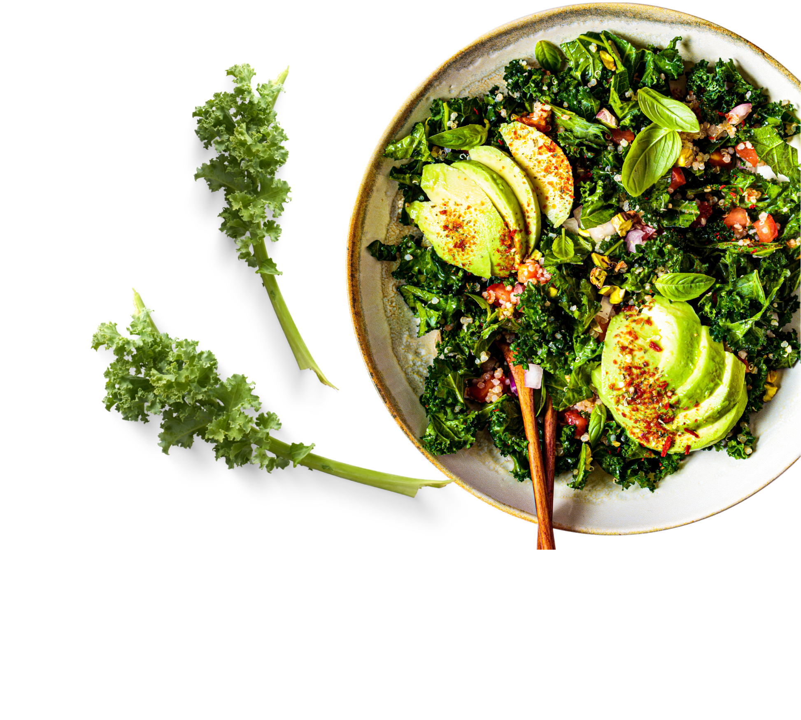
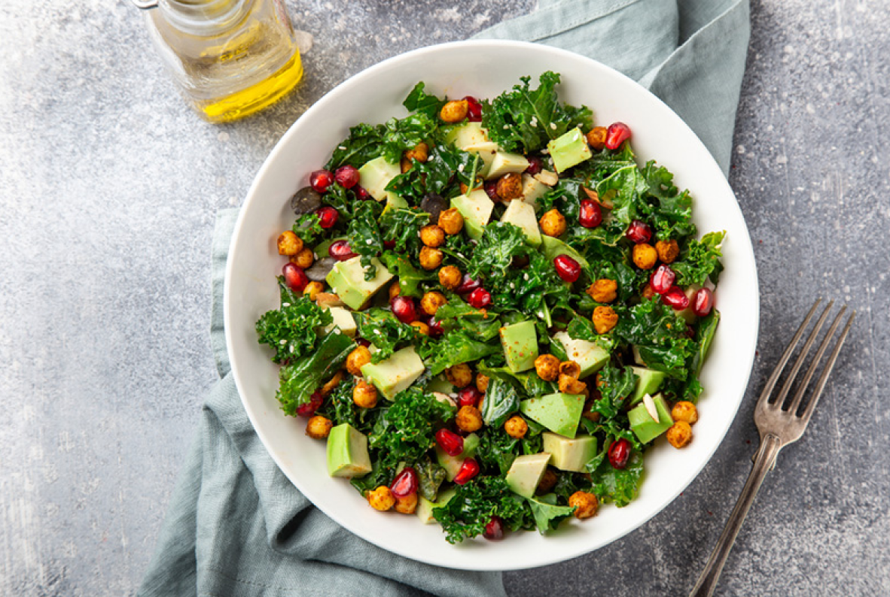
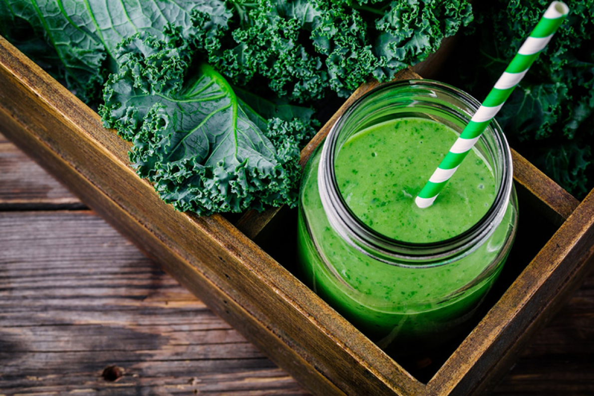
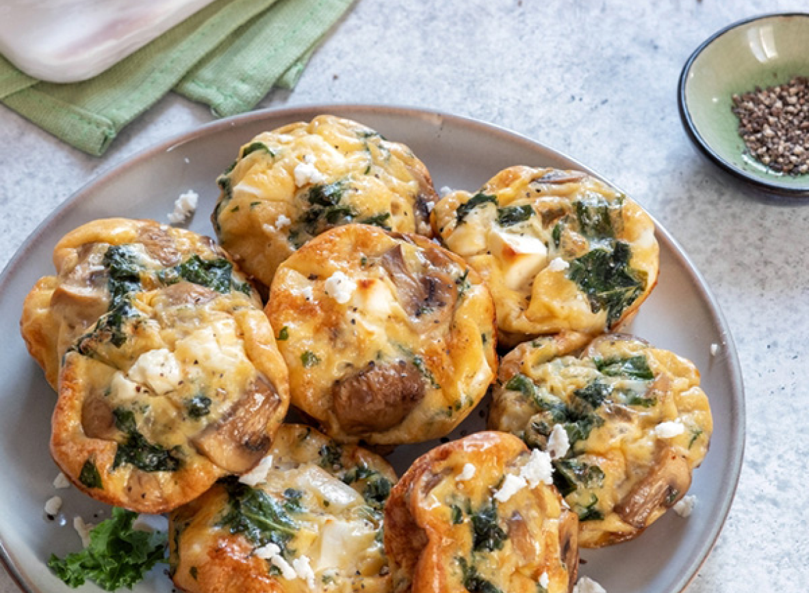
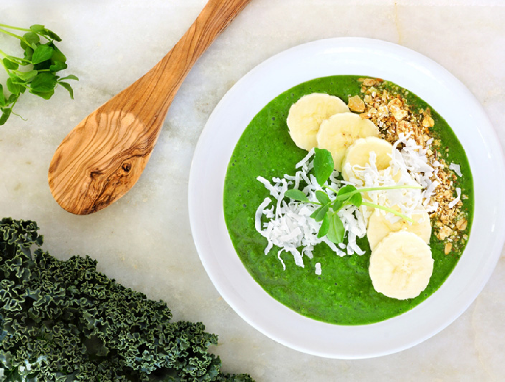

ABOUT KALE
KALE MENU
ABOUT US
ORDER

KALE MENU
ผักเคลกินแบบดิบหรือสดได้ ซึ่งจะไม่ทแต่ถ้าใครไม่ชอบรสขมหรือกลิ่นเหม็นเขียวก็สามารถนำมาปรุงสุกได้เช่นกัน เช่น ผัดผัก ซุปครีม อบชีส เป็นต้น

สลัดผักเคลอะโวคาโด
สลัดผักเคลอะโวคาโด ส่วนผสมมีผักเคล ทับทิม ถั่วชิกพี และอัลมอนด์ ใส่น้ำสลัดสไตล์ตามชอบ จับไปแช่เย็นก่อนเสิร์ฟเพิ่มความสดชื่น

สมูทตี้ผักเคล
สมูทตี้ผักเคล สูตรนี้ใส่กีวีกับกล้วยหอมลงไป เติมรสชาติเปรี้ยวอมหวานจากเสาวรสหรือน้ำส้ม ปั่นกับน้ำแข็งจนเนียนละเอียด ดื่มแค่อึกเดียวก็สดชื่นแล้ว
ซุปไก่มะกะโรนีผักเคล
ซุปไก่มะกะโรนีผักเคล ใส่เนื้อไก่หรือน่องไก่ พร้อมกับแครอต หอมใหญ่ และผักอื่น ๆ ตามชอบ ต้มกับน้ำซุปกระดูกไก่หอมหวาน เสิร์ฟร้อน ๆ อุ่นท้องอิ่มไปอีกมื้อ
ซอสเพสโต้ผักเคล
ซอสเพสโต้ผักเคล ปั่นรวมกับกระเทียม น้ำมันมะกอก พาร์มีซานชีส ถั่วพิสตาชิโอ ถั่วแมคคาเดเมีย ปรุงรสด้วยเกลือเล็กน้อย จากนี้ก็เอาไปผัดกับพาสต้าเติมความฟินกันเลย

มัฟฟินเคล
มัฟฟินเคลชิ้นพอดีคำเหมาะเป็นทั้งอาหารเช้าและอาหารว่าง ส่วนผสมทำจากผักเคลต้มสุกสับพอหยาบเคล้ากับแป้งสาลีหรือข้าวโอ๊ต ใส่เนยสดเพิ่มความหอม โรยชีสขูดเพื่อให้มีความยืดเยิ้มดูน่ากิน

เคลสมูทตี้โบวล์
ผักเคลสับละเอียดปั่นกับกล้วยหอมและนมสด หรือนมอัลมอนด์ เพิ่มรสเปรี้ยวอมหวานจากน้ำส้มด้วยก็ได้ถ้าชอบ ใส่น้ำแข็งลงไปปั่นด้วยเพื่อให้มีความเย็นสดชื่น เทใส่ภาชนะแล้วโรยกราโนลา แต่งด้วยกล้วยหอม